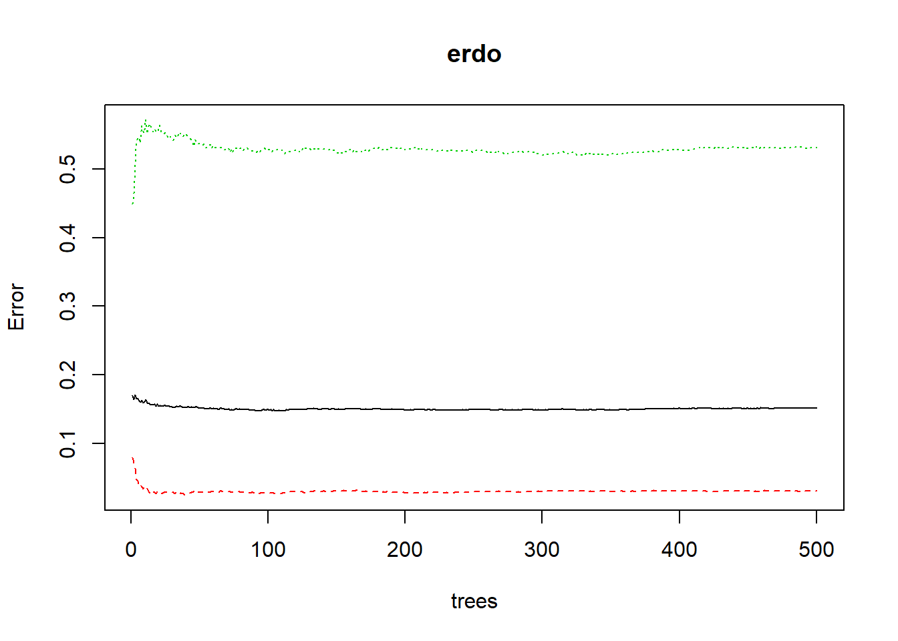
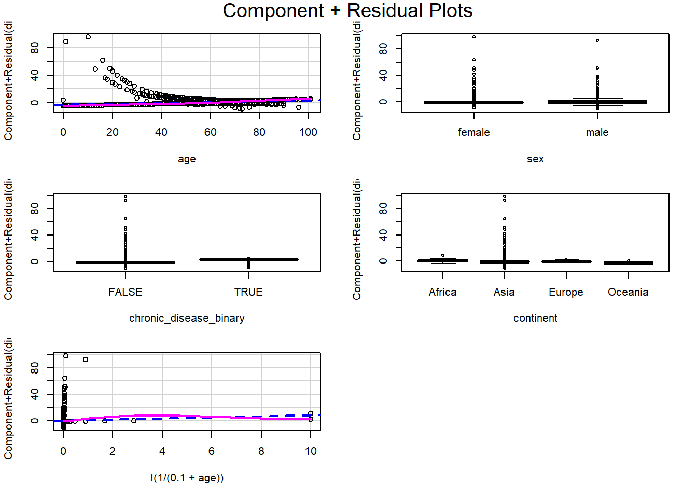
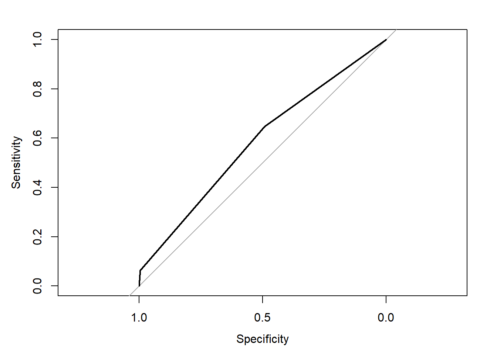
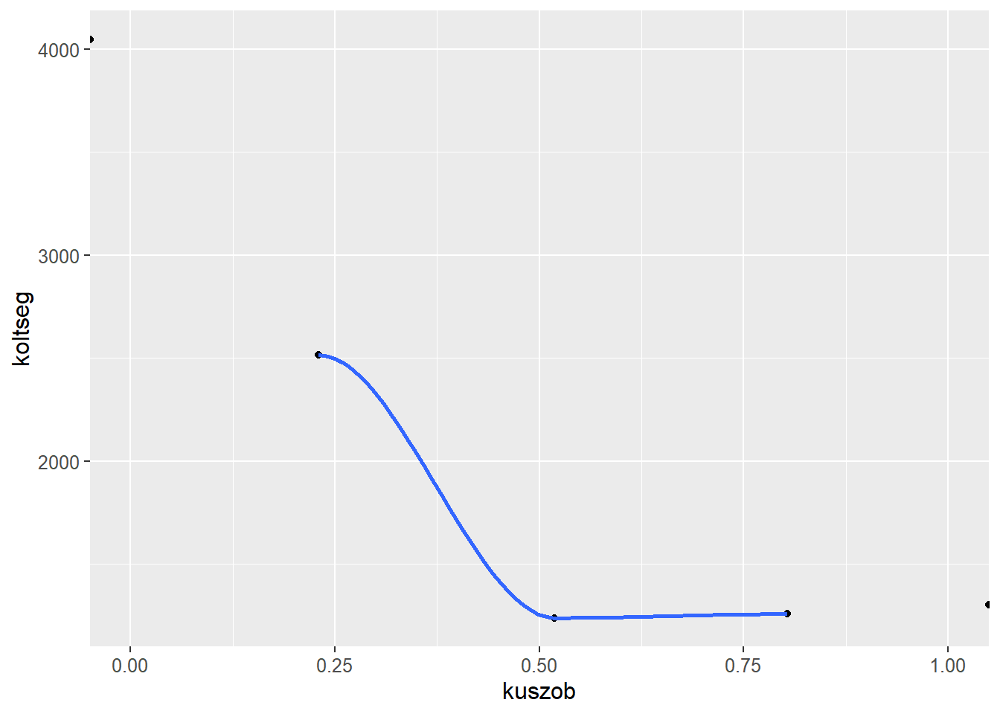

Logit-modell
Változók parciális hatása a halálozási valószínűségre
Egyesével regresszálva a változókat az alábbi grafikonokat kapjuk
Call:
glm(formula = died ~ age, family = binomial(logit), data = dat)
Deviance Residuals:
Min 1Q Median 3Q Max
-2.0456 -0.6758 -0.3856 -0.1311 3.1082
Coefficients:
Estimate Std. Error z value Pr(>|z|)
(Intercept) -4.822445 0.138130 -34.91 <2e-16 ***
age 0.070655 0.002361 29.93 <2e-16 ***
---
Signif. codes: 0 '***' 0.001 '**' 0.01 '*' 0.05 '.' 0.1 ' ' 1
(Dispersion parameter for binomial family taken to be 1)
Null deviance: 6004.7 on 5376 degrees of freedom
Residual deviance: 4757.2 on 5375 degrees of freedom
AIC: 4761.2
Number of Fisher Scoring iterations: 5Logit modell kalibrálása az összes tisztított és korábban bemutatott változóra
Outlierek és VIF mutató alapján
#Országok szintjén magas VIF mutató látható
logit <- glm(died~., data=dat, family=binomial(logit))
summary(logit)
Call:
glm(formula = died ~ ., family = binomial(logit), data = dat)
Deviance Residuals:
Min 1Q Median 3Q Max
-3.3169 -0.5631 -0.2986 0.0000 3.3579
Coefficients: (4 not defined because of singularities)
Estimate Std. Error z value Pr(>|z|)
(Intercept) -5.597e+02 4.593e+01 -12.185 < 2e-16 ***
age 7.284e-02 2.721e-03 26.774 < 2e-16 ***
sexmale 4.058e-01 8.495e-02 4.777 1.78e-06 ***
countryAustralia 3.608e+00 3.265e+00 1.105 0.2691
countryBahamas 1.372e+01 3.956e+03 0.003 0.9972
countryBrazil -1.936e+01 1.836e+03 -0.011 0.9916
countryBurkina Faso 1.666e+01 3.956e+03 0.004 0.9966
countryCabo Verde 1.536e+01 3.956e+03 0.004 0.9969
countryCameroon 1.732e+01 3.956e+03 0.004 0.9965
countryCanada -6.502e+00 2.725e+00 -2.386 0.0170 *
countryChina 4.793e+00 2.566e+00 1.868 0.0618 .
countryCuba 1.421e+01 3.956e+03 0.004 0.9971
countryEswatini -1.500e+01 3.956e+03 -0.004 0.9970
countryEthiopia 1.782e+01 3.956e+03 0.005 0.9964
countryFrance 5.098e-01 2.017e+00 0.253 0.8004
countryGabon 1.757e+01 3.956e+03 0.004 0.9965
countryGambia -4.257e+00 2.112e+00 -2.015 0.0439 *
countryGermany -1.785e+01 3.956e+03 -0.005 0.9964
countryGuyana 1.207e+01 2.797e+03 0.004 0.9966
countryIndia 2.990e+00 1.835e+00 1.630 0.1031
countryItaly 1.846e+00 1.822e+00 1.013 0.3111
countryJapan 6.014e+00 3.449e+00 1.743 0.0813 .
countryMalaysia -1.207e+01 1.300e+03 -0.009 0.9926
countryNepal -1.151e+01 2.797e+03 -0.004 0.9967
countryNiger 1.615e+01 3.956e+03 0.004 0.9967
countryPhilippines 2.101e+00 2.712e+00 0.775 0.4383
countryRomania -1.505e+01 1.287e+03 -0.012 0.9907
countrySan Marino 1.560e+01 3.956e+03 0.004 0.9969
countrySingapore -1.237e+01 3.310e+02 -0.037 0.9702
countrySouth Korea -1.061e+01 7.347e+02 -0.014 0.9885
countrySudan 1.866e+01 3.956e+03 0.005 0.9962
countrySwitzerland -1.633e+01 2.673e+03 -0.006 0.9951
countryTanzania -1.574e+01 3.956e+03 -0.004 0.9968
countryTogo -1.656e+01 3.956e+03 -0.004 0.9967
countryUnited States -3.085e+00 2.805e+00 -1.100 0.2714
countryVietnam -1.432e+01 5.579e+02 -0.026 0.9795
countryZimbabwe 1.765e+00 2.132e+00 0.828 0.4079
chronic_disease_binaryTRUE 3.231e+00 3.292e-01 9.815 < 2e-16 ***
latitude -2.284e-03 1.658e-02 -0.138 0.8904
longitude -4.044e-02 2.264e-02 -1.786 0.0741 .
continentAmericas NA NA NA NA
continentAsia NA NA NA NA
continentEurope NA NA NA NA
continentOceania NA NA NA NA
date 3.032e-02 2.503e-03 12.115 < 2e-16 ***
---
Signif. codes: 0 '***' 0.001 '**' 0.01 '*' 0.05 '.' 0.1 ' ' 1
(Dispersion parameter for binomial family taken to be 1)
Null deviance: 6004.7 on 5376 degrees of freedom
Residual deviance: 3754.8 on 5336 degrees of freedom
AIC: 3836.8
Number of Fisher Scoring iterations: 16 age sexmale
1.085588 1.025914
countryAustralia countryBahamas
Inf Inf
countryBrazil countryBurkina Faso
Inf 1.167971
countryCabo Verde countryCameroon
1.216675 1.170973
countryCanada countryChina
Inf Inf
countryCuba countryEswatini
Inf 1.249802
countryEthiopia countryFrance
1.198986 Inf
countryGabon countryGambia
1.183163 2.004172
countryGermany countryGuyana
Inf Inf
countryIndia countryItaly
Inf Inf
countryJapan countryMalaysia
Inf Inf
countryNepal countryNiger
Inf 1.161126
countryPhilippines countryRomania
Inf Inf
countrySan Marino countrySingapore
Inf Inf
countrySouth Korea countrySudan
Inf 1.181147
countrySwitzerland countryTanzania
Inf 1.205269
countryTogo countryUnited States
1.176805 Inf
countryVietnam countryZimbabwe
Inf 1.448560
chronic_disease_binaryTRUE latitude
1.133290 7.748399
longitude continentAmericas
238.200123 Inf
continentAsia continentEurope
Inf Inf
continentOceania date
Inf 2.137974 #Outlierek leszűrése
dat <- dat[abs(rstudent(logit))<3, ]
#Országok kihagyásával mérséklődik a VIF mutató
logit2 <- glm(died~.-country -longitude -latitude, data=dat, family=binomial(logit))
summary(logit2)
Call:
glm(formula = died ~ . - country - longitude - latitude, family = binomial(logit),
data = dat)
Deviance Residuals:
Min 1Q Median 3Q Max
-2.3750 -0.6113 -0.3195 -0.0667 3.3074
Coefficients:
Estimate Std. Error z value Pr(>|z|)
(Intercept) -6.836e+02 4.083e+01 -16.743 < 2e-16 ***
age 7.786e-02 2.677e-03 29.085 < 2e-16 ***
sexmale 4.658e-01 7.954e-02 5.856 4.74e-09 ***
chronic_disease_binaryTRUE 2.981e+00 3.085e-01 9.661 < 2e-16 ***
continentAmericas 1.116e+00 8.223e-01 1.357 0.17487
continentAsia -1.931e+00 7.074e-01 -2.729 0.00635 **
continentEurope 4.161e-01 9.988e-01 0.417 0.67696
continentOceania -1.424e+00 1.197e+00 -1.189 0.23427
date 3.702e-02 2.224e-03 16.643 < 2e-16 ***
---
Signif. codes: 0 '***' 0.001 '**' 0.01 '*' 0.05 '.' 0.1 ' ' 1
(Dispersion parameter for binomial family taken to be 1)
Null deviance: 5936.6 on 5347 degrees of freedom
Residual deviance: 4158.6 on 5339 degrees of freedom
(13 observations deleted due to missingness)
AIC: 4176.6
Number of Fisher Scoring iterations: 5 age sexmale
1.043362 1.007774
chronic_disease_binaryTRUE continentAmericas
1.063105 4.677268
continentAsia continentEurope
7.688847 2.356878
continentOceania date
2.717010 1.135966 #Amerikát összevonva Ázsiával a VIF mutatók lecsökkennek
dat <- na.omit(dat)
dat[dat$continent=="Americas", "continent"] <- "Asia"
logit3 <- glm(died~.-country -longitude -latitude, data=dat,
family=binomial(logit))
summary(logit3)
Call:
glm(formula = died ~ . - country - longitude - latitude, family = binomial(logit),
data = dat)
Deviance Residuals:
Min 1Q Median 3Q Max
-2.3229 -0.6220 -0.3234 -0.0779 3.2986
Coefficients:
Estimate Std. Error z value Pr(>|z|)
(Intercept) -5.997e+02 3.859e+01 -15.540 < 2e-16 ***
age 7.906e-02 2.658e-03 29.740 < 2e-16 ***
sexmale 4.649e-01 7.863e-02 5.912 3.37e-09 ***
chronic_disease_binaryTRUE 2.929e+00 3.093e-01 9.472 < 2e-16 ***
continentAsia -1.737e+00 7.107e-01 -2.445 0.0145 *
continentEurope 3.201e-01 1.007e+00 0.318 0.7507
continentOceania -1.546e+00 1.194e+00 -1.295 0.1954
date 3.244e-02 2.102e-03 15.432 < 2e-16 ***
---
Signif. codes: 0 '***' 0.001 '**' 0.01 '*' 0.05 '.' 0.1 ' ' 1
(Dispersion parameter for binomial family taken to be 1)
Null deviance: 5936.6 on 5347 degrees of freedom
Residual deviance: 4227.6 on 5340 degrees of freedom
AIC: 4243.6
Number of Fisher Scoring iterations: 5 age sexmale
1.028043 1.007773
chronic_disease_binaryTRUE continentAsia
1.062988 4.058929
continentEurope continentOceania
2.356839 2.716772
date
1.097746
RESET test
data: logit3
RESET = 123.11, df1 = 2, df2 = 5338, p-value < 2.2e-16
Nemlinearitás vizsgálata a RESET-teszttel
#Először a dátumot vesszük ki a magyarázóváltozók közül, mivel az értelmezése nehézkes,
#majd az életkor változóját alakítjuk át a linearitás eléréséhez
logit4 <- glm(died~.-country -date -latitude -longitude +I(1/(0.1+age)),
data=dat, family=binomial(logit))
summary(logit4)
Call:
glm(formula = died ~ . - country - date - latitude - longitude +
I(1/(0.1 + age)), family = binomial(logit), data = dat)
Deviance Residuals:
Min 1Q Median 3Q Max
-2.1856 -0.6591 -0.3652 -0.1435 3.0292
Coefficients:
Estimate Std. Error z value Pr(>|z|)
(Intercept) -4.621513 0.704158 -6.563 5.27e-11 ***
age 0.074179 0.002508 29.580 < 2e-16 ***
sexmale 0.447841 0.076053 5.889 3.90e-09 ***
chronic_disease_binaryTRUE 1.778913 0.284114 6.261 3.82e-10 ***
continentAsia -0.733078 0.687754 -1.066 0.286468
continentEurope -0.417980 0.991142 -0.422 0.673232
continentOceania -2.311118 1.095266 -2.110 0.034850 *
I(1/(0.1 + age)) 0.352330 0.091441 3.853 0.000117 ***
---
Signif. codes: 0 '***' 0.001 '**' 0.01 '*' 0.05 '.' 0.1 ' ' 1
(Dispersion parameter for binomial family taken to be 1)
Null deviance: 5936.6 on 5347 degrees of freedom
Residual deviance: 4495.6 on 5340 degrees of freedom
AIC: 4511.6
Number of Fisher Scoring iterations: 5 age sexmale
1.056523 1.007713
chronic_disease_binaryTRUE continentAsia
1.025718 4.042502
continentEurope continentOceania
2.352099 2.704910
I(1/(0.1 + age))
1.028043
RESET test
data: logit4
RESET = 75.368, df1 = 2, df2 = 5338, p-value < 2.2e-16
logit5 <- glm(died~.-country -age +I(1/(0.1+age)) -date -latitude -longitude, data=dat,
family=binomial(logit))
summary(logit5)
Call:
glm(formula = died ~ . - country - age + I(1/(0.1 + age)) - date -
latitude - longitude, family = binomial(logit), data = dat)
Deviance Residuals:
Min 1Q Median 3Q Max
-1.9112 -0.7956 -0.6485 -0.5462 3.3660
Coefficients:
Estimate Std. Error z value Pr(>|z|)
(Intercept) -0.37968 0.55595 -0.683 0.4946
sexmale 0.46798 0.06653 7.035 2e-12 ***
chronic_disease_binaryTRUE 2.63226 0.26352 9.989 <2e-16 ***
continentAsia -1.06407 0.55564 -1.915 0.0555 .
continentEurope -0.96595 0.76258 -1.267 0.2053
continentOceania -2.18141 0.92486 -2.359 0.0183 *
I(1/(0.1 + age)) -0.42176 0.34692 -1.216 0.2241
---
Signif. codes: 0 '***' 0.001 '**' 0.01 '*' 0.05 '.' 0.1 ' ' 1
(Dispersion parameter for binomial family taken to be 1)
Null deviance: 5936.6 on 5347 degrees of freedom
Residual deviance: 5722.7 on 5341 degrees of freedom
AIC: 5736.7
Number of Fisher Scoring iterations: 6 sexmale chronic_disease_binaryTRUE
1.003989 1.003505
continentAsia continentEurope
4.040352 2.349987
continentOceania I(1/(0.1 + age))
2.704254 1.000201
RESET test
data: logit5
RESET = 2.497, df1 = 2, df2 = 5339, p-value = 0.08243#Elhagyható a magyarázóváltozók közül szinte az összes
linearHypothesis(logit5, c("I(1/(0.1 + age))=0", "continentEurope=0", "continentAsia=0", "continentOceania=0"))Linear hypothesis test
Hypothesis:
I(1/(0.1 + age)) = 0
continentEurope = 0
continentAsia = 0
continentOceania = 0
Model 1: restricted model
Model 2: died ~ (age + sex + country + chronic_disease_binary + latitude +
longitude + continent + date) - country - age + I(1/(0.1 +
age)) - date - latitude - longitude
Res.Df Df Chisq Pr(>Chisq)
1 5345
2 5341 4 7.4952 0.1119logit6 <- glm(died~.-country -continent -age -date -latitude -longitude, data=dat,
family=binomial(logit))
summary(logit6)
Call:
glm(formula = died ~ . - country - continent - age - date - latitude -
longitude, family = binomial(logit), data = dat)
Deviance Residuals:
Min 1Q Median 3Q Max
-1.9143 -0.7952 -0.6461 -0.6461 1.8272
Coefficients:
Estimate Std. Error z value Pr(>|z|)
(Intercept) -1.46064 0.05146 -28.385 < 2e-16 ***
sexmale 0.47137 0.06644 7.094 1.3e-12 ***
chronic_disease_binaryTRUE 2.64704 0.26334 10.052 < 2e-16 ***
---
Signif. codes: 0 '***' 0.001 '**' 0.01 '*' 0.05 '.' 0.1 ' ' 1
(Dispersion parameter for binomial family taken to be 1)
Null deviance: 5936.6 on 5347 degrees of freedom
Residual deviance: 5734.4 on 5345 degrees of freedom
AIC: 5740.4
Number of Fisher Scoring iterations: 4
RESET test
data: logit6
RESET = 0.9037, df1 = 2, df2 = 5343, p-value = 0.4051 (Intercept) sexmale
0.2320868 1.6021878
chronic_disease_binaryTRUE
14.1121469 Előrejelzés a kiválasztott modellel
deathval <- predict(logit6, dat, type="response")
dat$deathval <- deathval
dat$becsult <- ifelse(deathval>0.5, "TRUE", "FALSE")
xtabs(~died+becsult, data=dat) becsult
died FALSE TRUE
FALSE 4028 18
TRUE 1220 82[1] 0.7685116Optimális cut-off érték kiválasztása

[1] 0.1684161#Mivel csak 4 típusú kimenetel lehet a megmaradt változókból,
#így a költségfüggvény is 5 értéket vesz fel
ytengely <- ROCgorbe$sensitivities
xtengely <- ROCgorbe$specificities
kuszob <- ROCgorbe$thresholds
seged <- data.frame(kuszob, xtengely, ytengely)
table(dat$died)
FALSE TRUE
4046 1302 seged$koltseg <- 4046*(1-xtengely)+1302*(1-ytengely)
ggplot(seged, aes(x=kuszob, y=koltseg))+geom_point()+geom_smooth()+xlim(0,1) A függvény alapján a 0.5 lesz az optimális küszöbérték